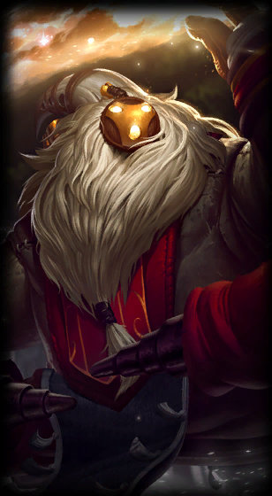

Bard
the Wandering Caretaker
Class :
Support, Mage
Lore :
A traveler from beyond the stars, Bard is an agent of serendipity who fights to maintain a balance where life can endure the indifference of chaos. Many Runeterrans sing songs that ponder his extraordinary nature, yet they all agree that the cosmic vagabond is drawn to artifacts of great magical power. Surrounded by a jubilant choir of helpful spirit meeps, it is impossible to mistake his actions as malevolent, as Bard always serves the greater good... in his own odd way.
Stats :
| Health | Health per level | Mana | Mana per level | Movement speed | Armor | Armor per level | MR | MR per level | Range | HP regen | HP regen per level | Mana regen | Mana regen per level | Crit | Crit per level | AD | AD per level | AS per level | AS |
|---|---|---|---|---|---|---|---|---|---|---|---|---|---|---|---|---|---|---|---|
| 560 | 89 | 350 | 50 | 330 | 34 | 4 | 30 | 0.5 | 500 | 5.5 | 0.55 | 6 | 0.45 | 0 | 0 | 52 | 3 | 2 | 0.625 |

Passive : Traveler's Call
<font color='#FF9900'>Meeps:</font> Bard attracts lesser spirits that assist with his basic attacks to deal extra magic damage. When Bard has collected enough <font color='#cccc00'>Chimes</font>, his meeps will also deal damage in an area and slow enemies hit.<br><br><font color='#FF9900'>Chimes:</font> Ancient <font color='#cccc00'>chimes</font> randomly appear for Bard to collect. These grant experience, restore mana, and provide out of combat Move Speed.